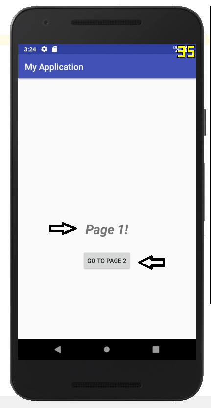
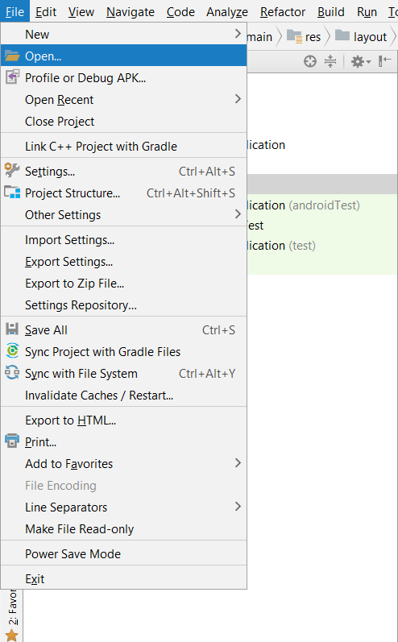
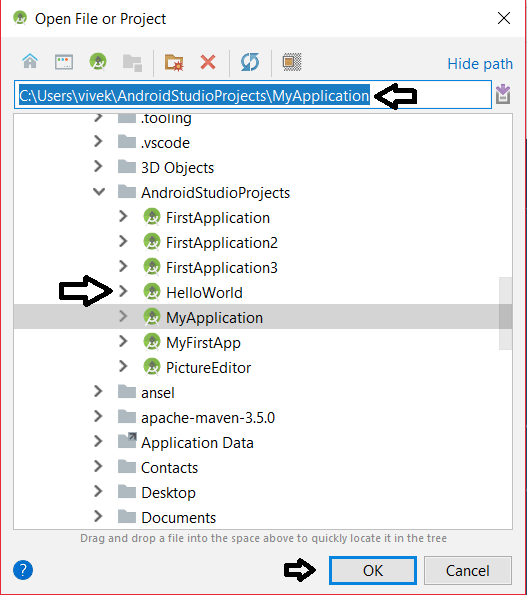
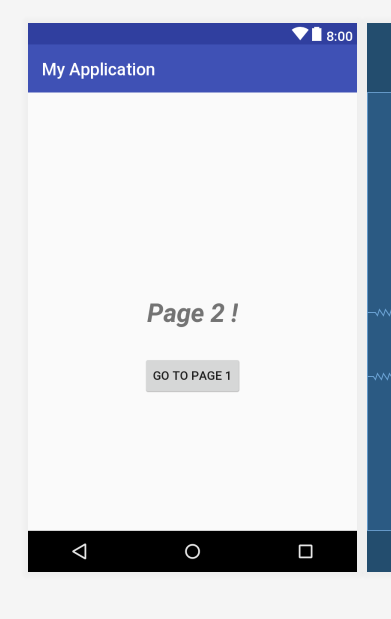
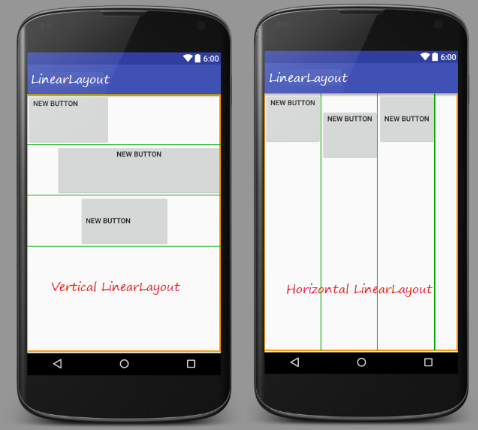
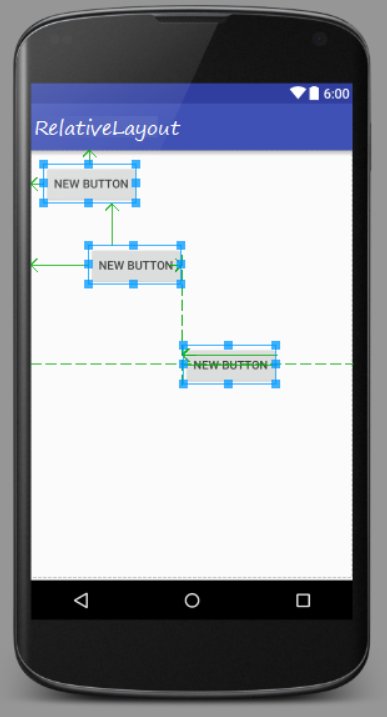
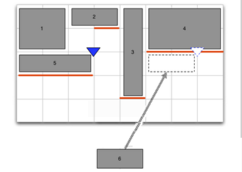
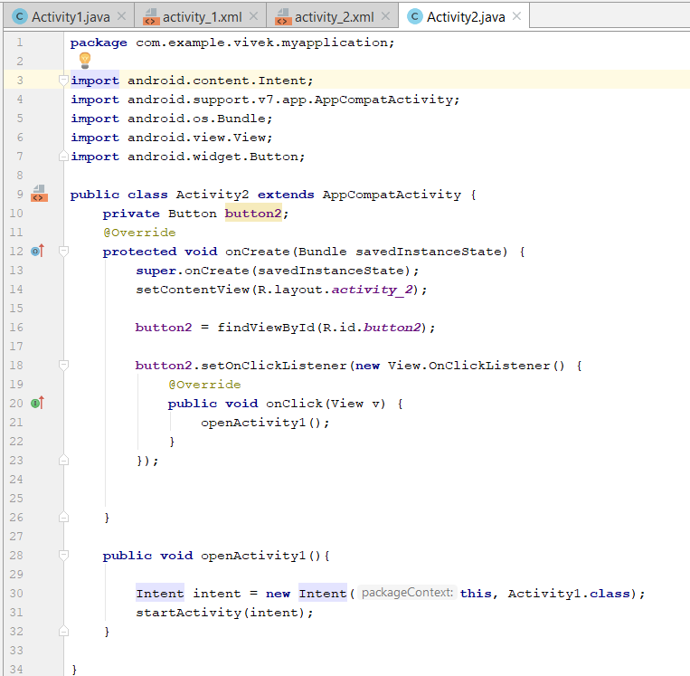

Introduction to Layouts and Object Oriented Programming
Objectives: In this tutorial you will learn about arrangement of visual elements and Object oriented programming(OOP) concepts. At the end of the session you will be able to,
- Create Activities
- Create Buttons
- Understand the difference between Relative, Linear and Grid layout. Write program to provide functionality to your android project using OOP concepts
This is Page 1 of our application. It consists of two elements which are shown by arrows.

First, text ‘Page 1!’ which is bold and italic.
Second, a button named ‘GO TO PAGE 2’. Clicking on this button will switch the screen to page 2 which
is shown as below.
This is the page 2 with the same elements. Clicking on button ‘GO TO PAGE1’ should take us to previous screen.
Let’s first open the project which you created in tutorial 1. Go to File -> Open
 Go to the directory where the project was stored and click ‘OK’.
First Open the activity 1 editor window in ‘Design’ Mode.
- open the activity 1 xml file in 'Design' Mode.
- Double click on the text which is currently 'subbranch'. It should open attribute window.
- Change the text to 'Page 1!'.
- Make the text Bigger by changing the textSize to 30sp.
- Make it Bold and Italic. Refer the attached screenshot.
Now edit the text and add a button as shown in the image below. Follow previous instructions.
Now open any one of xml file in 'Text' mode.
Let's learn some basic concepts related to User Interfaces in Android.
Android Layouts:
An Android layout is a class that handles arranging the way its elements appear on the screen.
There are some standard layouts in android which are widely used explained as follows.
1. Linear Layout: LinearLayout is a view group that aligns all children in a single direction, vertically or horizontally.
2. Relative Layout RelativeLayout is a view group that displays child views in relative positions. The position of each view can be specified as relative to sibling elements (such as to the left-of or below another view) or in positions relative to the parent RelativeLayout area (such as aligned to the bottom, left or center).
3. Grid Layout: GridLayout uses a grid of infinitely-thin lines to separate its drawing area into: rows, columns, and cells. It supports both row and column spanning, this means it is possible to merge adjacent cells into a large cell (a rectangle) to contain a View.
Let's Check which layout is used by observing the xml file from top.
On the second line it say's 'ConstraintLayout' which is followed by 'android.support.constraint'.
4. ConstraintLayout : It is the most recent type of layout which was introduced in android on May 30, 2016. Previously for the more complex User Interfaces, mixture or different layouts e.g linear and Relative layouts were used. But Constraint Layout is efficient enough to create complex UI hence avoiding the complexities. It is the default layout in Android Studio.
Part 2: Adding the Functionality using Java:
- go to Project Window
- open in 'Android' Scope
- expand 'app' -> 'java' -> 'com.example.username.helloworld'
- Open 'Activity1.java;
- Enter the following code as displayed in the image.
Note: the package name will be different in your case after ‘com.example.’.
Let's understand some basic concepts of Object Oriented Programming to understand this code.
Object Oriented Programming:
It is a type of programming in which programmers define not only the data type of a data structure, but also the types of operations (functions) that can be applied to the data structure. In this way, the data structure becomes an object that includes both data and functions. In addition, programmers can create relationships between one object and another. For example, objects can inherit characteristics from other objects.
One of the principal advantages of object-oriented programming techniques over procedural programming techniques is that they enable programmers to create modules that do not need to be changed when a new type of object is added. A programmer can simply create a new object that inherits many of its features from existing objects. This makes object-oriented programs easier to modify.
Object:
Objects are the basic run-time entities in an object-oriented system. Programming problem is analyzed in terms of objects and nature of communication between them. When a program is executed, objects interact with each other by sending messages. Different objects can also interact with each other without knowing the details of their data or code.
An object is an instance of a class. A class must be instantiated into an object before it can be used in the software. More than one instance of the same class can be in existence at any one time.
Class:
A class is a collection of objects of a similar type. Once a class is defined, any number of objects can be created which belong to that class. A class is a blueprint, or prototype, that defines the variables and the methods common to all objects of a certain kind.
Instance:
The instance is the actual object created at runtime. One can have an instance of a class or a particular object.
State:
The set of values of the attributes of a particular object is called its state. The object consists of state and the behaviour that's defined in the object's class.
Method:
Method describes the object’s abilities. A Dog has the ability to bark. So bark() is one of the methods of the Dog class.
Message Passing:
The process by which an object sends data to another object or asks the other object to invoke a method. Message passing corresponds to "method calling".
Abstraction:
Abstraction refers to the act of representing essential features without including the background details or explanations. Classes use the concept of abstraction and are defined as a list of abstract attributes.
Encapsulation:
It is the mechanism that binds together code and data in manipulates, and keeps both safe from outside interference and misuse. In short, it isolates a particular code and data from all other codes and data. A well-defined interface controls the access to that particular code and data. The act of placing data and the operations that perform on that data in the same class. The class then becomes the 'capsule' or container for the data and operations.
Storing data and functions in a single unit (class) is encapsulation. Data cannot be accessible to the outside world and only those functions which are stored in the class can access it.
Inheritance:
It is the process by which one object acquires the properties of another object. This supports the hierarchical classification. Without the use of hierarchies, each object would need to define all its characteristics explicitly. However, by use of inheritance, an object need only define those qualities that make it unique within its class. It can inherit its general attributes from its parent. A new sub-class inherits all of the attributes of all of its ancestors.
Polymorphism:
Polymorphism means the ability to take more than one form. An operation may exhibit different behaviours in different instances. The behaviour depends on the data types used in the operation.
It is a feature that allows one interface to be used for a general class of actions. The specific action is determined by the exact nature of the situation. In general, polymorphism means "one interface, multiple methods", This means that it is possible to design a generic interface to a group of related activities. This helps reduce complexity by allowing the same interface to be used to specify a general class of action. It is the compiler's job to select the specific action (that is, method) as it applies to each situation.
Remember that this Activity1.java is a backend file for activity_1.xml file.
- all the import statements used to import the necessary files and packages which contains methods and classes with predefined functionality.
- every functionality is need to be written in class Activity1 {.....} which extends(inherits) class AppCompatActivity.
- Defined a variable named 'button' of type 'Button' to hold values related to the button we used in UI. 'private' is an access modifier which means this variable can only be used within this class.
- onCreate() is a method used to defines the actions to be taken when this activity is initiated. i.e. when this page is loaded. It is protected to it can be used in the classes which inherites this class.
- 'Bundle savedInstanceState' : The savedInstanceState is a reference to a Bundle object that is passed into the onCreate method of every Android Activity. Activities have the ability, under special circumstances, to restore themselves to a previous state using the data stored in this bundle. If there is no available instance data, the savedInstanceState will be null. For example, the savedInstanceState will always be null the first time an Activity is started, but may be non-null if an Activity is destroyed during rotation.
-
setContentView(R.layout.activity_1):
R means Resource
layout means design
activity_1 is the xml you have created under res->layout->acitivity_1.xml
Whenever you want to change your current Look of an Activity or when you move from one Activity to another . The other Activity must have a design to show . So we call this method in onCreate and this is the second statement to set the design
- In next line the id of the button is assigned to the 'button' variable using 'findViewById()' method.
- What should happen when user clicks that button ? to define that, 'setOnClickListener()' method is used. First we are creating new object and then calling 'onClick()' method by passing that object. Here we are defining that method named 'openActivity2()' should be called.
- An intent is an abstract description of an operation to be performed. It can be used to launch another activity. So inside openActivity2() method, object 'intent' of 'Intent' type is created and the Activity2 class is passed as a value. Then 'intent' variable is passed to 'startActivity' method which is used to start a new activity, in this case, Activity2.
- Now go to Activity2.java and write the following code in it. Refer the following image. 
- Save all the changes and run the application.
- Push all the changes to your GitHub repository which you have learnt in Tutorial 1. (Add -> Commit -> Push)
Advantages of OOP:
- Object-Oriented Programming has the following advantages over conventional approaches.
- OOP provides a clear modular structure for programs which makes it good for defining abstract data types where implementation details are hidden and the unit has a clearly defined interface.
- OOP makes it easy to maintain and modify existing code as new objects can be created with small differences to existing ones.
- OOP provides a good framework for code libraries where supplied software components can be easily adapted and modified by the programmer.